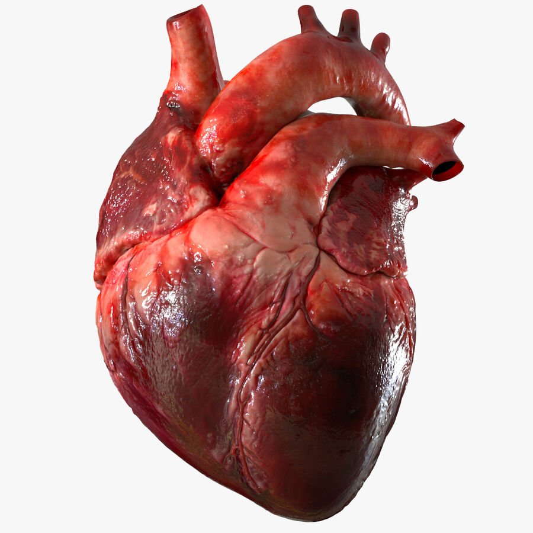
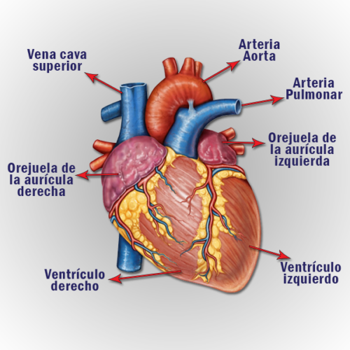

| Beneficio o Mejora |
Descripción |
| Prolonga la vida de las personas que de otra manera morirían |
El corazón debe ser donado por alguien que esté clínicamente muerto, pero que permanezca con soporte vital. |
| Operación |
Se extrae el corazón enfermo y el corazón donado se sutura en su sitio. Luego, se desconecta la máquina de circulación extracorpórea. La sangre fluye por el corazón trasplantado y este se hace cargo de suministrar sangre y oxígeno al cuerpo. |
| Resultados |
La mayoría de las personas que reciben un trasplante de corazón disfrutan de una buena calidad de vida. Según tu afección, es posible que puedas volver a realizar muchas de tus actividades cotidianas, como trabar, dedicarte a tus pasatiempos, practicar deportes y hacer ejercicio. Habla con el médico sobre las actividades que son adecuadas para ti. |
| Como se mantiene un corazón antes del transplante |
Se transporta el corazón donado en una solución especial para preservarlo. Se hace una incisión a través del esternón, mientras el paciente se encuentra profundamente dormido y sin sentir dolor (bajo anestesia general). |

| Función |
Descripción |
| Bombeo |
El corazón bombea sangre a todas las partes del cuerpo. La sangre suministra oxígeno y nutrientes a todo el cuerpo y elimina el dióxido de carbono y los elementos residuales. |
| El corazón es un órgano del tamaño aproximado de un puño |
Está compuesto de tejido muscular y bombea sangre a todo el cuerpo. La sangre se transporta a todo el cuerpo a través de los vasos sanguíneos, unos tubos llamados arterias y venas. |
| La estructura del corazón |
El corazón tiene cuatro cavidades (dos aurículas y dos ventrículos). Hay un tabique (septo) entre las dos aurículas y otro entre los dos ventrículos. Las arterias y las venas entran y salen del corazón. |
| El flujo de sangre a través del corazón |
La sangre desoxigenada regresa del resto del cuerpo al corazón a través de la vena cava superior (VCS) y la vena cava inferior (VCI), las dos venas principales que llevan la sangre de vuelta al corazón. |
| Sangre desoxigenada |
La sangre desoxigenada entra a la aurícula derecha (AD), o cavidad superior derecha del corazón. |
| Vávula tricúspide |
Desde allí, la sangre fluye a través de la válvula tricúspide (VT) hacia adentro del ventrículo derecho (VD), o cavidad inferior derecha del corazón. |
